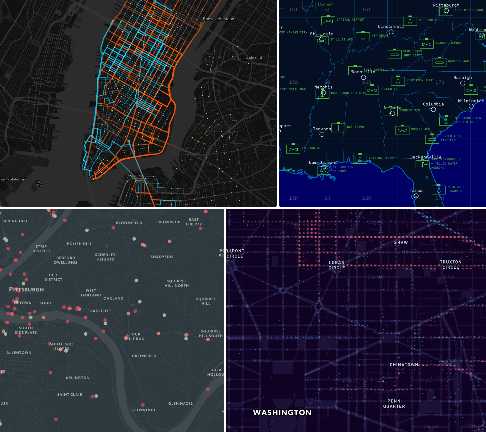

Maps!
What makes these maps great?
- Well designed
- Tells a story
But what are even web maps?
They're maps...
that are displayed on a website with code (HTML, CSS, and JavaScript)
(Additional backstory on how web maps work under the hood
here)
Where does the map data come from?
A community-driven map that anyone can contribute to.
Mapbox turns this
Into this
Mapbox provides ways for you to include your own custom data, too
How can I make my own web maps?
An online interface for customizing web maps

We have a nifty manual for it
hereWhat can I do with Mapbox Studio?
- Use a Mapbox template style
- Upload custom data
- Draw & edit data
- Style data
- Share a link to your map style
- Generate a static image of your map style
What can't you do with Mapbox Studio?
Add interactivity
(Popups, hover effects, etc. This requires JavaScript code - Mapbox GL JS)
Manipulate data
(Calculate statistics, perform geoprocessing tasks, etc. Other open-source tools are good for this, such as QGIS and GDAL)

The field
- Cartographers
- GIS analysts & technicians
- Remote sensing analysts & scientists
- Designers
- Developers
- Software engineers
- Project managers
Online resources to get started with web mapping: